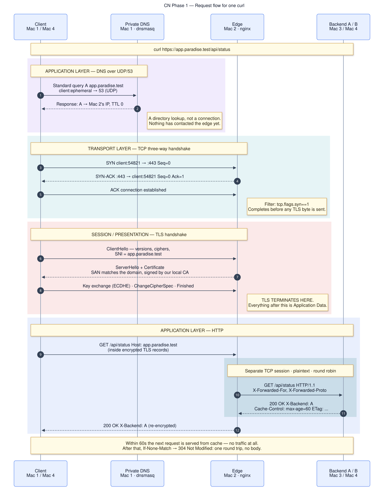
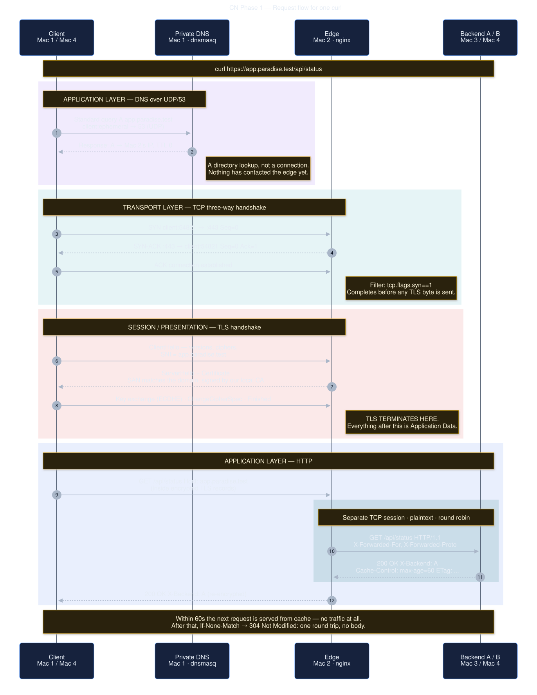

Private Network Service Platform
Four macOS laptops on one LAN. A private DNS zone, an nginx edge terminating TLS and load balancing across two REST backends, and packet-level evidence of every layer in a single request.
The application stays simple — the network is the project.
Overview
Each machine takes one network role. This is a topology, not a software architecture.
Private DNS
dnsmasq · 53 UDP/TCP
Authoritative for *.paradise.test. Also a test client. ≈ Route 53 private zone
Edge
nginx · 443 / 8443
TLS termination, reverse proxy, round robin. ≈ ALB + ACM
Backend A
Express · 0.0.0.0:3001
Sets X-Backend: A. ≈ EC2 in a target group
Backend B
Express · 0.0.0.0:3002
Sets X-Backend: B. Also a test client.


Mermaid source — network topology
---
title: CN Phase 1 — Network topology
---
flowchart TB
subgraph LAN["Private LAN — one Wi-Fi / switch, single /24 broadcast domain"]
direction TB
C["<b>Client</b><br/>curl / browser<br/><i>runs on Mac 1 or Mac 4</i>"]
DNS["<b>Mac 1 · Private DNS</b><br/>dnsmasq · UDP/TCP 53<br/>authoritative for *.paradise.test<br/><i>≈ Route 53 private hosted zone</i>"]
EDGE["<b>Mac 2 · Edge</b><br/>nginx · TLS termination<br/>reverse proxy · round robin<br/>:443 (or :8443)<br/><i>≈ AWS ALB + ACM certificate</i>"]
BA["<b>Mac 3 · Backend A</b><br/>Express · 0.0.0.0:3001<br/>X-Backend: A<br/><i>≈ EC2 in a target group</i>"]
BB["<b>Mac 4 · Backend B</b><br/>Express · 0.0.0.0:3002<br/>X-Backend: B<br/><i>also acts as a test client</i>"]
end
C -- "<b>1 · DNS query</b><br/>A? app.paradise.test<br/>UDP/53" --> DNS
DNS -. "answer: Mac 2's IP<br/>TTL 0" .-> C
C == "<b>2 · TCP handshake, TLS, HTTP</b><br/>client:ephemeral → :443<br/><b>encrypted</b>" ==> EDGE
EDGE -- "<b>3 · proxy_pass</b><br/>plain HTTP/1.1<br/>separate TCP session" --> BA
EDGE -- "round robin" --> BB
classDef dns fill:#f3ecff,stroke:#7c3aed,stroke-width:2px,color:#1e1b2e
classDef edge fill:#e8f0ff,stroke:#2563eb,stroke-width:2px,color:#0f172a
classDef ba fill:#e6fbf7,stroke:#0d9488,stroke-width:2px,color:#0f2b28
classDef bb fill:#fdf6e3,stroke:#ca8a04,stroke-width:2px,color:#2b2410
classDef cli fill:#f1f5f9,stroke:#475569,stroke-width:2px,color:#0f172a
class DNS dns
class EDGE edge
class BA ba
class BB bb
class C cli
linkStyle 0 stroke:#7c3aed,stroke-width:2px
linkStyle 1 stroke:#7c3aed,stroke-width:2px,stroke-dasharray:5 4
linkStyle 2 stroke:#2563eb,stroke-width:3px
linkStyle 3 stroke:#0f766e,stroke-width:2px
linkStyle 4 stroke:#0f766e,stroke-width:2px

Mermaid source — request flow
---
title: CN Phase 1 — Request flow for one curl
---
sequenceDiagram
autonumber
participant C as Client<br/>Mac 1 / Mac 4
participant D as Private DNS<br/>Mac 1 · dnsmasq
participant E as Edge<br/>Mac 2 · nginx
participant B as Backend A / B<br/>Mac 3 / Mac 4
Note over C,B: curl https://app.paradise.test/api/status
rect rgba(124, 58, 237, 0.10)
Note over C,D: APPLICATION LAYER — DNS over UDP/53
C ->> D: Standard query A app.paradise.test<br/>client:ephemeral → 53 (UDP)
D -->> C: Response: A → Mac 2's IP, TTL 0
Note right of D: A directory lookup, not a connection.<br/>Nothing has contacted the edge yet.
end
rect rgba(8, 145, 178, 0.10)
Note over C,E: TRANSPORT LAYER — TCP three-way handshake
C ->> E: SYN client:54821 → :443 Seq=0
E -->> C: SYN-ACK :443 → client:54821 Seq=0 Ack=1
C ->> E: ACK connection established
Note right of E: Filter: tcp.flags.syn==1<br/>Completes before any TLS byte is sent.
end
rect rgba(220, 38, 38, 0.10)
Note over C,E: SESSION / PRESENTATION — TLS handshake
C ->> E: ClientHello — versions, ciphers,<br/>SNI = app.paradise.test
E -->> C: ServerHello + Certificate<br/>SAN matches the domain, signed by our local CA
C ->> E: Key exchange (ECDHE) · ChangeCipherSpec · Finished
Note right of E: TLS TERMINATES HERE.<br/>Everything after this is Application Data.
end
rect rgba(37, 99, 235, 0.10)
Note over C,B: APPLICATION LAYER — HTTP
C ->> E: GET /api/status Host: app.paradise.test<br/>(inside encrypted TLS records)
rect rgba(15, 118, 110, 0.14)
Note over E,B: Separate TCP session · plaintext · round robin
E ->> B: GET /api/status HTTP/1.1<br/>X-Forwarded-For, X-Forwarded-Proto
B -->> E: 200 OK X-Backend: A<br/>Cache-Control: max-age=60 ETag: ...
end
E -->> C: 200 OK X-Backend: A (re-encrypted)
end
Note over C,B: Within 60s the next request is served from cache — no traffic at all.<br/>After that, If-None-Match → 304 Not Modified: one round trip, no body.Real IPs live in .env and nowhere else.
Config files are templates rendered from it, so changing an address is a one-line
edit plus ./scripts/render-configs.sh. Run ./scripts/status.sh on any
machine to print the live inventory.
Setup
Order matters: backends first, then the edge, then DNS, then point the clients. Pick your machine below.
- Clone the repo on all four machines
git clone https://github.com/Taj-2005/paradise.git cd paradise - Find each machine's LAN address
Run on every Mac and write the four values down.
ipconfig getifaddr en0Expected10.0.0.21Nothing printed? Your LAN is not on
en0. Find the real interface withroute get default | awk '/interface:/{print $2}'and setIFACEin.env. - Fill in
.envonce, then copy it to all fourcp .env.example .env $EDITOR .env # set DNS_IP, EDGE_IP, BACKEND_A_IP, BACKEND_B_IP ./scripts/render-configs.shscp .env user@<mac2>:~/paradise/.env scp .env user@<mac3>:~/paradise/.env scp .env user@<mac4>:~/paradise/.env - Install this machine's prerequisites
Detects the role from this machine's IP and installs only what it needs.
./scripts/bootstrap.sh
Want to test everything on one laptop first?
make smoke runs the whole stack — two backends, nginx, a real
certificate, round robin, the 304, and the failure demo — on a single machine
with no LAN and no sudo. Fifteen checks in about ten seconds. Do this before
you get four laptops on a desk.
Start the backends first so nginx has somewhere to send traffic.
- Start Backend A
make backend-aExpected CN Phase 1 — Backend A listening http://0.0.0.0:3001 cache Cache-Control: public, max-age=60 endpoints GET / GET /api/status GET /healthz GET /api/timeLeave it running in the foreground — the access log it prints is worth having on screen during the demo.
- Confirm it is NOT bound to loopback
lsof -nP -iTCP:3001 -sTCP:LISTENWantnode 12345 you 14u IPv4 TCP *:3001 (LISTEN)If you see
TCP 127.0.0.1:3001, stop. nginx on Mac 2 cannot reach a loopback-bound backend and every proxied request will return 502 — whilecurl localhost:3001looks perfectly healthy. This is the most common failure in the whole project. The service is written to refuse to start on loopback, so if you see this you have started it by hand with the wrongHOST.
- Start Backend B
make backend-bExpected CN Phase 1 — Backend B listening http://0.0.0.0:3002 - Confirm the bind address
lsof -nP -iTCP:3002 -sTCP:LISTENWantTCP *:3002 (LISTEN) — not 127.0.0.1:3002
Mac 4 is also a test client, so it needs the client steps too.
- Generate certificates, install the config, start nginx
One command does all of it, validating before it restarts anything.
make edgeExpected✓ Certificate issued by the mkcert local CA ✓ SAN covers app.paradise.test ✓ Key and certificate match ✓ Configuration valid ✓ nginx listening on :443 ✓ End-to-end 200 through the proxy (TLS verified, no -k) - Distribute the root CA to the other three Macs
This is what keeps the whole team off
-k.scp infra/mac2-edge/certs/rootCA.pem user@<mac1>:~/ scp infra/mac2-edge/certs/rootCA.pem user@<mac3>:~/ scp infra/mac2-edge/certs/rootCA.pem user@<mac4>:~/Regenerating the certificate creates a new CA. If you re-run
gen-certs.shlater, every machine must be re-trusted. Doing this on demo morning and forgetting to redistribute is a classic way to end up reaching for-k. - Watch requests arrive (useful during the video)
tail -f /opt/homebrew/var/log/nginx/paradise-access.logShows10.0.0.21 - [30/Sep/2026:14:02:11] "GET /api/status HTTP/2.0" 200 127 upstream=10.0.0.12:3001 backend=A tls=TLSv1.3/TLS_AES_128_GCM_SHA256 rt=0.004
Cannot bind port 443? Set
HTTPS_PORT=8443 and HTTP_PORT=8080 in .env,
re-render, and re-run. The spec allows this with no marks deducted.
Just be consistent — every URL in your evidence must then carry :8443.
- Install and start dnsmasq
make dnsExpected✓ Config syntax OK ✓ listen-address is not loopback ✓ app.paradise.test -> 10.0.0.11 (via 127.0.0.1) ✓ api.paradise.test -> 10.0.0.11 (via 10.0.0.10 — reachable from the LAN)The one line that decides whether this works:
listen-address=0.0.0.0. dnsmasq defaults to127.0.0.1, which works perfectly when tested on Mac 1 and is completely invisible to every other machine.install.shhard-fails if it finds loopback here. - Verify
./infra/mac1-dns/verify.sh - Watch queries arrive live (excellent on camera)
Leave this running and
digfrom Mac 3 — the query appears the instant it is made, proving resolution reached this server and not the router.sudo tail -f /opt/homebrew/var/log/dnsmasq.logShowsquery[A] app.paradise.test from 10.0.0.12 config app.paradise.test is 10.0.0.11
Run these on all four Macs, including Mac 1 and Mac 2.
- Point this machine's resolver at Mac 1
make client-dnsExpected✓ app.paradise.test -> 10.0.0.11 (resolved through Mac 1) → dig reports SERVER: 10.0.0.10 ✓ Queries are going to Mac 1The
SERVER:line is exactly what the evaluator checks in form field A3 — it must be Mac 1, not your router and not 8.8.8.8. - Trust the team root CA
make client-trustExpected✓ Added. ✓ Certificate verified with no -k flag. You are ready for evaluation.Do not continue until this passes.
-kanywhere in your submitted evidence scores zero for the entire HTTPS section. Fix trust here, not during the recording.
Verify
Run from a client machine — Mac 1, 3 or 4. Never Mac 2: form field A3 requires client-side proof.
make preflight # ping matrix + port reachability
make verify # the full Phase 1 acceptance testChecklist
Ticks are saved in this browser. Everything here is asserted by
make verify.
Why the 304 demo uses /api/cacheable.
/api/status must identify which backend answered, so A and B return
different bodies — and therefore compute different ETags for the same
resource. Behind round robin, a conditional request frequently lands on the
other replica, which does not recognise your validator and sends a full 200. You
would see 304 only about half the time. /api/cacheable returns a
byte-identical body on both machines, so revalidation is deterministic.
This is a real constraint, not a workaround: cache validators must agree across replicas or conditional requests silently degrade into full responses. It is a good thing to raise unprompted in the viva.
Layer mapping
Every protocol in this project, placed in both models, with the command that makes it observable.
| OSI | TCP/IP | Protocol here | Port | Observe with | AWS equivalent |
|---|---|---|---|---|---|
| 7 Application | Application | DNS | 53 UDP | dig · filter dns | Route 53 |
| 7 Application | Application | HTTP/1.1, HTTP/2 | 443 | curl -v | ALB listener rules |
| 6 Presentation | Application | TLS record layer | — | filter tls | ACM |
| 5 Session | Application | TLS handshake | — | ClientHello … Finished | ACM + ALB |
| 4 Transport | Transport | TCP / UDP | 443 / 53 | tcp.flags.syn==1 | ALB (L7) vs NLB (L4) |
| 3 Network | Internet | IPv4 | — | ping | VPC / subnets |
| 2 Data Link | Link | Ethernet / 802.11 | — | ifconfig en0 | abstracted away |
| 1 Physical | Link | Wi-Fi radio | — | signal strength | abstracted away |
TLS is the awkward one. OSI splits it — session establishment at 5, encryption at 6. TCP/IP has no such split and folds it into "application". The complete answer is: TLS sits above TCP and below HTTP; OSI splits it across 5 and 6, TCP/IP folds it into the application layer.
Two connections, not one
| client → edge | edge → backend | |
|---|---|---|
| Protocol | HTTPS, TLS 1.2/1.3 | plain HTTP/1.1 |
| Destination port | 443 / 8443 | 3001 / 3002 |
| Source port | client ephemeral | nginx ephemeral |
| Readable in Wireshark | no — encrypted | yes — plaintext |
| Lifetime | per client request | pooled, keepalive 16 |
Independent TCP sessions with independent handshakes. The client's TLS session terminates at nginx — which is exactly what "TLS termination" means, and why a capture shows opaque bytes on one leg and readable HTTP on the other.
Failure demonstrations
Spec §6.3. Each one breaks a different layer, and telling them apart is the diagnostic skill being assessed.
make demo-failEach option captures before state, performs the break, captures after state, names the affected layer, and restores — all four of which are marked.
| Option | Break | Observation | Layer |
|---|---|---|---|
| A use this for the video | Stop Backend A | All responses become X-Backend: B, no 502s | application |
| B | Client resolver → 8.8.8.8 | dig NXDOMAIN, but ping to the IP still works | application (DNS) |
| C | Request port 9999 | Connection refused; host reachable, no listener | transport (TCP) |
| D | Stop both backends | TLS still completes, nginx returns 502 | application (upstream) |
Option A is the one to record. It is visual, takes
under a minute, and recovers cleanly on camera — nginx marks the dead upstream down after
a single failed connection (max_fails=1) and proxy_next_upstream
retries the survivor within the same client request, so the client never sees an error.
Troubleshooting
Diagnose top down. The first step that fails names the layer, and everything below it is proven fine. This sequence is also the answer to the Phase 2 faculty-injected fault — say it aloud as you do it.
ping -c3 <edge-ip> # 1 · network — reachable?
dig app.paradise.test # 2 · DNS — resolves, and who answered?
nc -vz app.paradise.test 443 # 3 · transport — anything listening?
curl -v https://app.paradise.test/api/status # 4 · TLS — handshake and trust
curl -i https://app.paradise.test/api/status # 5 · HTTP — what did it say?./scripts/status.sh runs all five and prints a verdict.
502 Bad Gateway on every request application
nginx is healthy; it cannot reach an upstream. Test from Mac 2, not from the backend itself:
curl -v http://<backend-ip>:3001/healthz- Connection refused → backend not running, or bound to
127.0.0.1. On the backend:lsof -nP -iTCP:3001 -sTCP:LISTEN. WantTCP *:3001, notTCP 127.0.0.1:3001. - Timeout → macOS firewall on the backend. Allow
node. - Works from Mac 2 but still 502 through the proxy → wrong IP in the
upstream block. Fix
.envandmake render.
curl: (60) certificate not trusted session
Fix the trust — never add -k.
make client-trust
curl -v https://app.paradise.test/api/status 2>&1 | grep -i 'verify\|subject\|issuer'Still failing? The certificate nginx serves was not signed by the CA this machine
trusts. Regenerating the cert creates a new CA — redistribute
rootCA.pem and re-trust everywhere.
curl: (60) no alternative certificate subject name matches session
The certificate has a Common Name but no Subject Alternative Name. Modern clients
ignore CN entirely (RFC 6125). Regenerate — gen-certs.sh refuses to finish
without a SAN covering the app domain.
FORCE=1 ./infra/mac2-edge/scripts/gen-certs.sh
make client-trust # on every Mac — this is a new CAdig times out from a client but works on Mac 1 application · DNS
dnsmasq is bound to loopback. Check the rendered config:
grep -E 'listen-address|interface' infra/mac1-dns/dnsmasq.confThen make dns to reinstall and restart.
Client lost internet access after make client-dns application · DNS
dnsmasq is answering for .test but not forwarding anything else. Confirm
no-resolv and server=1.1.1.1 are present, then restart. Emergency
rollback on the client:
./infra/client/reset-dns.shX-Backend never changes application
One backend is down, or nginx has marked it down. Check both:
./scripts/status.sh
curl -s http://<backend-a-ip>:3001/healthz
curl -s http://<backend-b-ip>:3002/healthzAfter restarting a backend, wait out fail_timeout (10s) before retesting.
304 sometimes, 200 other times application
You are testing /api/status, whose body — and therefore ETag — differs
per backend. Use /api/cacheable:
ETAG=$(curl -sI https://app.paradise.test/api/cacheable \
| awk -F': ' 'tolower($1)=="etag"{print $2}' | tr -d '\r')
curl -sI -H "If-None-Match: $ETAG" https://app.paradise.test/api/cacheablenginx will not bind to port 443 transport
Ports below 1024 need root. Either run nginx with sudo, or switch to the
unprivileged pair — the spec allows it with no marks deducted:
sed -i '' 's/^HTTP_PORT=.*/HTTP_PORT=8080/;s/^HTTPS_PORT=.*/HTTPS_PORT=8443/' .env
make render && make edgeEvery URL in your evidence must then include :8443.
EADDRINUSE starting a backend transport
lsof -nP -iTCP:3001 -sTCP:LISTEN
kill <pid>Things that look broken but are not
| Observation | Why it is correct |
|---|---|
Header names lowercase — etag:, x-backend: | HTTP/2 requires it. Use curl --http1.1 for classic casing. |
| Wireshark shows only "Application Data" | TLS is working. That is the whole point — and explaining it earns the C3 marks. |
dig @8.8.8.8 returns NXDOMAIN | Required. It proves the name is private (form A4). |
curl https://<ip>/ gives an empty reply | default_server returns 444 on purpose — enforcing "by name, never by IP". |
| Alternation is not perfectly even | Keepalive pooling skews short bursts. Both appearing in six requests is what matters. |
| First request slower than the rest | Full TLS handshake; later ones resume the session. |
Command reference
| Command | Machine | What it does |
|---|---|---|
make bootstrap | any | First-run setup; detects this machine's role |
make smoke | one | Whole stack on a single laptop — 15 checks, no LAN needed |
make render | any | Regenerate configs from .env |
make dns | Mac 1 | Install + start dnsmasq |
make edge | Mac 2 | Certs, nginx config, validate, start |
make backend-a / -b | Mac 3 / 4 | Start a backend in the foreground |
make client-dns | all | Point the resolver at Mac 1 |
make client-trust | all | Install the root CA |
make preflight | any | Ping matrix + port reachability |
make verify | client | Full Phase 1 acceptance test |
make lb | client | Six requests, assert both backends answer |
make evidence | client | Write form answers into evidence/ |
make capture | any | tcpdump helper for Wireshark |
make demo-fail | any | Failure demonstration menu |
make restore | any | Return this machine to known-good |
make status | any | What is running here, and can it see the others |